Rozproszona baza szeregów czasowych
na węzłach obliczeniowych CUDA
Karol Dzitkowski
Jakub Dutkowski
Tomasz Janiszewski
Plan prezentacji
- Przypomnienie struktury systemu
- Budowa węzła obliczeniowego
- Obliczenia na przykładzie całki
- Proces developerski
- Główne wyzwania podczas pracy
- Przykładowy interfejs użytkownika
Ogólny opis systemu
- Baza danych szeregów czasowych
- Przechowywanie danych w pamięci kart graficznych
- Rozproszona architektura - duża skalowalność
- Wykorzystanie wydajności kart graficznych

Jakie api udało nam się stworzyć dotychczas
method: GET
- /data/metric/{metrics}/tag/{tags}/time/{times}/aggregation/{aggr}
- /data/metric/{metrics}/tag/{tags}/time/{times}/aggregation/ histogramByValue/from/{from}/to/{to}/buckets/{buckets}
- /data/metric/{metrics}/tag/{tags}/time/{times}/aggregation/ histogramByTime/from/{from}/to/{to}/buckets/{buckets}
- /data/metric/{metrics}/tag/{tags}/time/from/{from}/to/{to}/ aggregation/series/sum/samples/{samples}
method: POST
- /data/
- /data/flush
Elementy trzymane w bazie w postaci JSON
element:
{
"tag":1, // int32
"metric":2, // int32
"time":1383501407, // int64
"value":0.5 // float32
}
Węzeł obliczeniowy - STORE
Zajmuje się:
- Składowaniem otrzymanych danych na odpowiednich kartach graficznych NVIDIA.
- Wykonywaniem zleconych przez serwer główny zadań na danych zawartych w posiadanych kartach GPU.
- Pre-agregacją wyników zadań otrzymanych z wielu kart GPU, które może posiadać
- Przekazywaniem swojego stanu do serwera głównego i utrzymywaniem z nim połączenia
Struktura
- Node
Główna klasa w węźle - zarządza kontrolerami oraz przyjmuje i przekazuje zlecenia przychodzące z sieci; Zbiera ukończone zadania i wysyła odpowiedzi do serwera
- StoreController
Klasa odpowiedzialna za kontrolę pojedyńczej karty graficznej CUDA używanej przez system; Zarządza buforami oraz zleca zadania wątkom roboczym
- StoreBuffer
Klasa odpowiedzialna za składowanie oraz lokalizację danych o konkretnej metryce na karcie GPU
- QueryCore
Klasa odpowiedzialna za wykonywanie zapytań na bazie danych mających na celu wyciągnięcie oraz odpowiednie zagregowanie wyciągniętych danych z GPU
Wkładanie danych
- Elementy są przekazywane do StoreBuffera który zapełnia nimi bufor po stronie CPU. Rozmiar bufora jest konfigurowalny i ma duży wpływ na wydajność poszczególnych elementów systemu. Pełny bufor danych przekazywany dalej nazywamy Trunkiem.
- Gotowy trunk jest przetwarzany przez wątek, wkładający ostatni element do bufora. Następuje zamiana buforów aby inne wątki mogły w między czasie używać bufora.
- Trunk jest następnie kopiowany do bufora roboczego po stronie GPU.
- Trunk jest sortowany po czasie
- Roboczy bufor po stronie GPU jest odpowiednio kompresowany.
- Skompresowany bufor jest synchronicznie dołączany do końca zajętego miejsca w głównej pamięci bazy danych na GPU.
- Informacja o położeniu oraz minimalnym i maksymalnym czasie elementów w Trunku jest zapisywana w B+Drzewie przez obiekt BTreeMonitor należący do StoreBuffera
Wyciąganie danych
- Zadanie jest przekazywane do odpowiedniego wątku wykonującego funkcję typu select; Który tworzy obiekt zapytania na podstawie otrzymanych z sieci danych.
- Następnie wątek wykonuje funkcję "Execute Query" klasy Query Core, przekazując do niej obiekt zapytania wraz z pobranymi ze StoreBuffera informacjami o lokalizacji odpowiednich trunków w bazie danych
- Query Core początkowo "mapuje" trunki zgodnie z otrzymanymi lokalizacjami, a następnie je rozkompresowuje używając do tego utworzonego obiektu Compressora
- Rozkompresowane dane jako tablica elementów są następnie filtrowane pod kątem tagów, oraz czasu.
- Przesiane dane są kierowane do Agregatora, który jeśli zapytanie tego wymaga redukuje wyciągnięte dane odpowiednią funkcją (np. sumując je)
- Wątek obsługujący dane zadanie ustawia na nim wynik przekazując mu otrzymany rezultat
- Już samo zadanie po otrzymaniu wszystkich rezultatów opcjonalnie je redukuje jeśli funkcja agregacji na to pozwala i oznacza się jako ukończone.
- Ukończone zadania są zbierane a ich wyniki wysyłane do serwera.
Ilość wkładanych elementów na sekundę w zależności od rozmiaru bufora
- Dane wkładane są bez pośrednictwa serwera głównego a więc bezpośrednio do głównej klasy wrzucającej dane
- Pomiaru dokonano jako średnią z 10 wyników dla każdej próby dla miliona elementów
- Maksymalną wartość zanotowano jako 197 000 elementów na sekundę dla bufora o rozmiarze 512 elementów
- Przedstawione wyniki uzyskano przy dwóch równoległych wątkach wrzucających dane

Realizacja agregacji na przykładzie całki
ZAŁOŻENIA:
- Trunki są posortowane
- Trunki zawierają ciągłe fragmenty szeregów
- Agregacja całki jest wykonywana na dokładnie jednym szeregu
- Oraz w jednym przedziale czasowym
MAP:
- Za pomocą B+Drzewa, mapowania trunków w głównej pamięci na GPU, dekompresji oraz filtracji otrzymujemy tablicę elementów danego szeregu oraz informacje o ich ułożeniu w trunkach
- Dla każdego trunka obliczamy metodą trapezów całki dla elementów z tego trunka
- Tworzymy odpowiedź jako struktury zawierające całkę pod kawałkiem szeregu zawartym w trunku oraz czas i wartość elementów na lewym i prawym brzegu trunka
REDUCE:
- Wszystkie otrzymane tablice otrzymanych struktur łączymy w jedną tablicę
- Sortujemy struktury względem "czasu lewego elementu"
- Sumujemy wszystkie całki kawałków szeregów zawartych w strukturach oraz dodajemy do tego pola trapezów powstałych z par prawego czasu i wartości danej struktury z lewym czasem i wartością struktury następnej
Jak pracowaliśmy
Hipchat
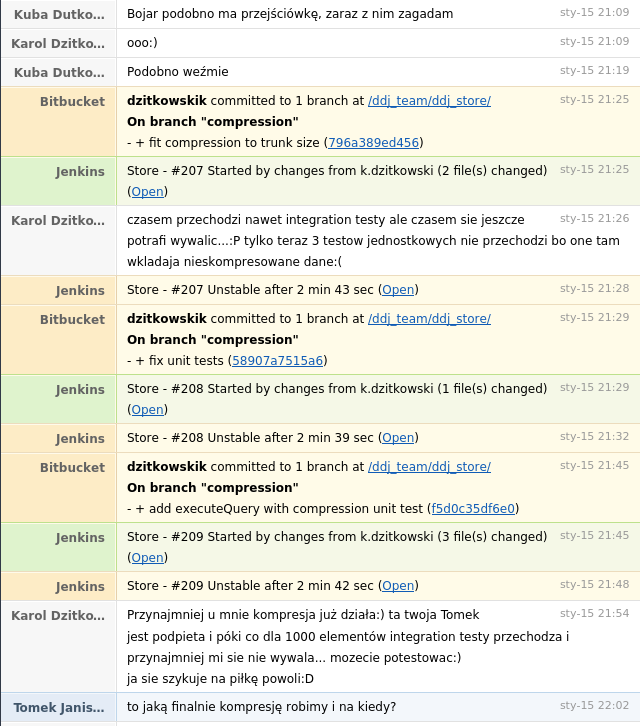Jenkins
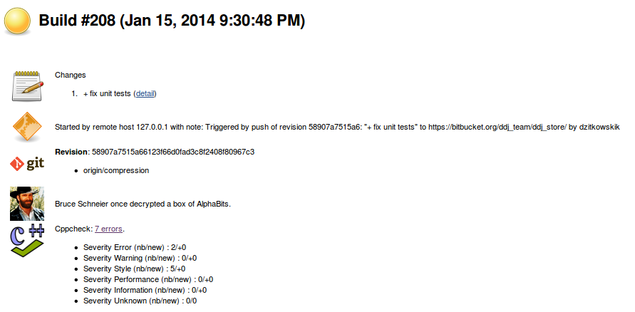Jenkins
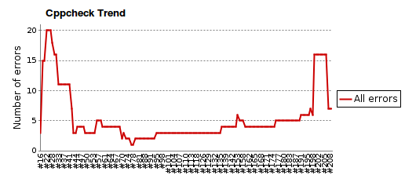Jenkins
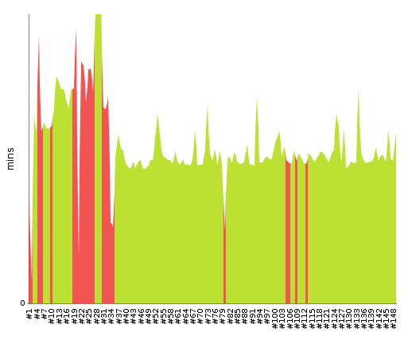Jenkins
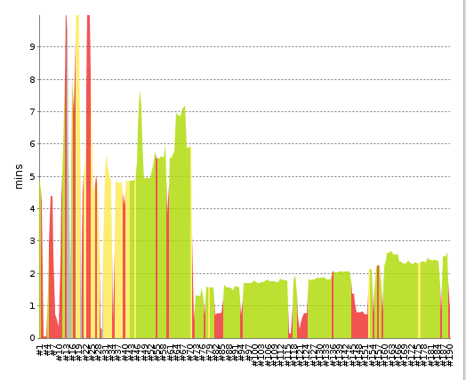Git
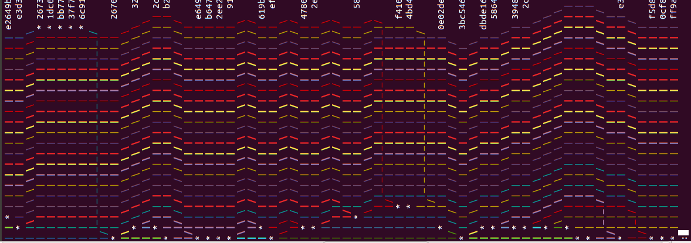Git
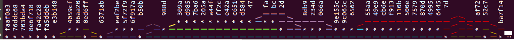Git

Git
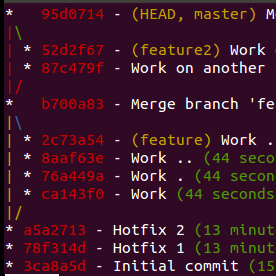Codebrag
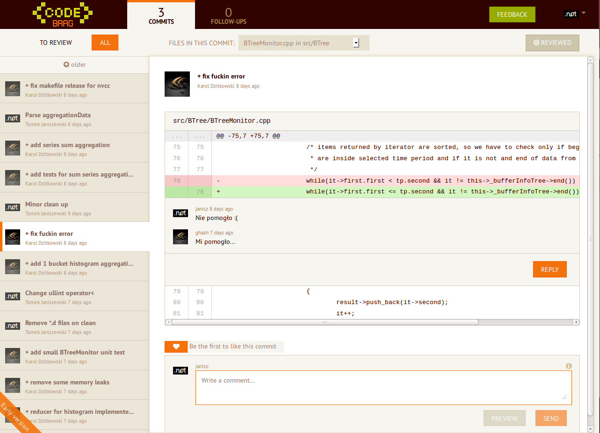Code
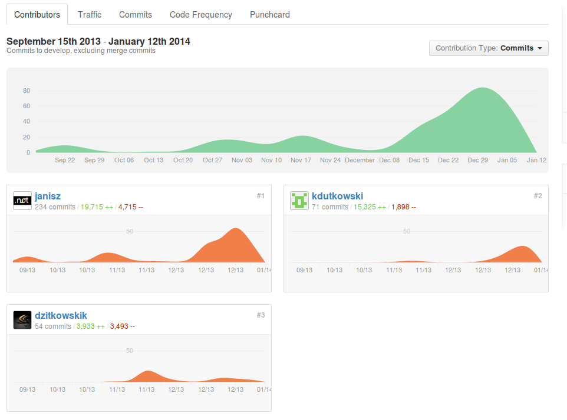
Code
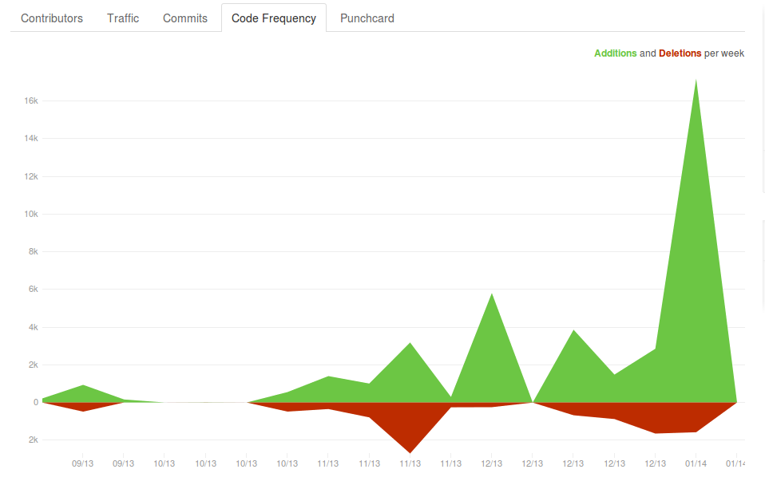
Code
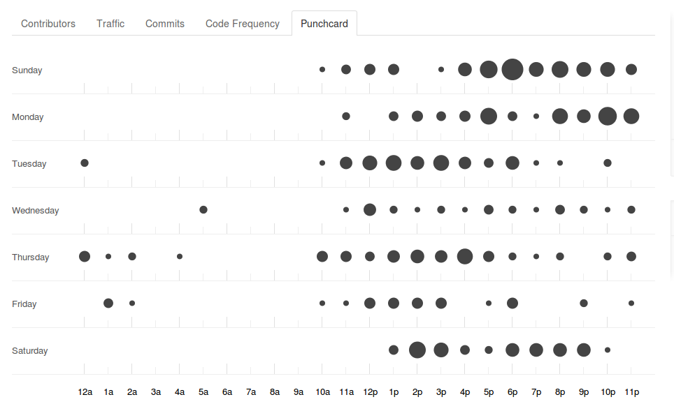 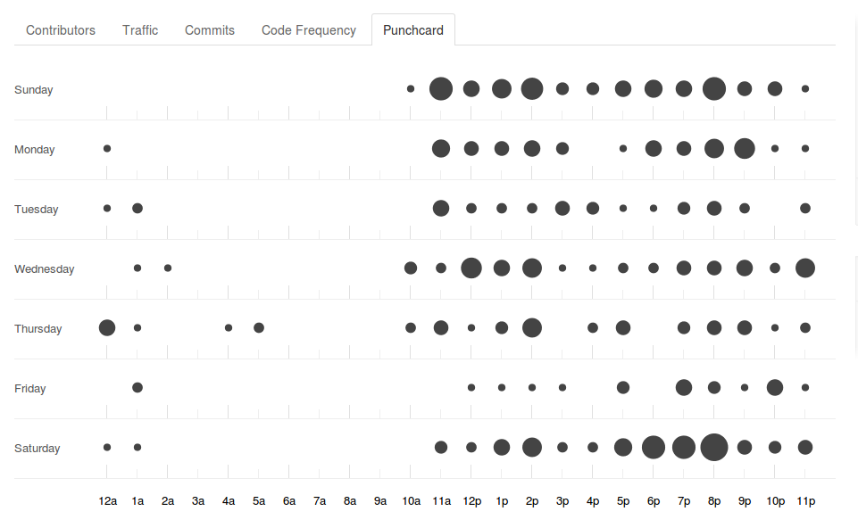Największe wyzwania i problemy
- Duża złożoność systemu
- Integracja dwóch części
- CUDA
- Duża równoległość
- Synchronizacja pracy
- Testy